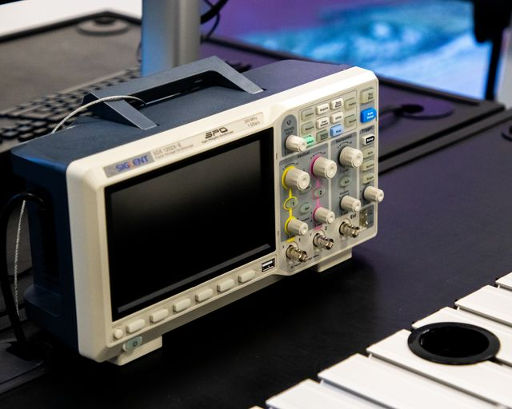

Thiết bị đo áp suất hơi bão hòa (RVP) hoàn toàn tự động cho xăng, dầu thô và dung môi. Dải đo rộng, độ lặp lại cao, tuân thủ các tiêu chuẩn quốc tế — phù hợp phòng QC nhà máy lọc dầu và phòng thí nghiệm kiểm định.
| Hãng sản xuất | AMETEK GRABNER (Áo) |
| Dòng thiết bị | MINIVAP Vision |
| Model | VPL Vision |
| Phương pháp đo | Triple expansion (single/triple) |
| Dải áp suất | 0 – 1.000 kPa |
| Dải nhiệt độ | 0 – 100 °C |
| Độ lặp lại | ≤ 0,7 kPa |
| Thể tích mẫu | 1 – 10 ml |
| Tiêu chuẩn | ASTM D5191, D6378, EN 13016 |
| Giao tiếp | USB · LAN · máy in |
| Xuất xứ | Chính hãng, nhập khẩu |
| Bảo hành | 12 tháng + hỗ trợ kỹ thuật |
MINIVAP VPL Vision là máy phân tích áp suất hơi bão hòa (RVP/DVPE) hoàn toàn tự động, thiết kế cho phòng QC nhà máy lọc dầu, kho xăng dầu và phòng thí nghiệm kiểm định. Thiết bị đo nhanh, chính xác và lặp lại cao trên dải đo rộng, phù hợp cho xăng, dầu thô, dung môi và nhiều loại nhiên liệu lỏng dễ bay hơi.
Nhờ nguyên lý giãn nở ba bậc (triple expansion) và buồng đo điều nhiệt Peltier, thiết bị cho kết quả tương quan trực tiếp với các phương pháp tham chiếu quốc tế mà không cần bão hòa mẫu thủ công, rút ngắn thời gian phân tích chỉ còn vài phút mỗi mẫu.
Phương pháp phổ biến để xác định áp suất hơi của xăng và nhiên liệu bay hơi bằng buồng đo nhỏ, tương quan với RVP.
Đo áp suất hơi trực tiếp cho xăng, dầu thô và dung môi mà không cần bão hòa mẫu, phù hợp đo nhanh trên dây chuyền.
Quy định phương pháp xác định áp suất hơi của nhiên liệu lỏng, áp dụng cho thị trường châu Âu.
Thiết bị được hiệu chuẩn và cấp CO/CQ đầy đủ; hỗ trợ hồ sơ tuân thủ khi đấu thầu và kiểm định.
Cần tài liệu kỹ thuật chi tiết hơn (biên bản hiệu chuẩn, hướng dẫn vận hành)? Vui lòng gửi yêu cầu để được cung cấp.